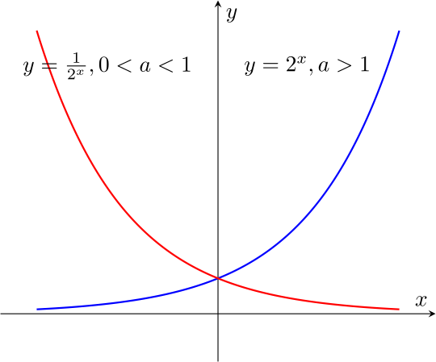
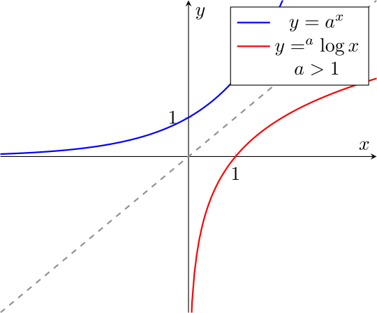
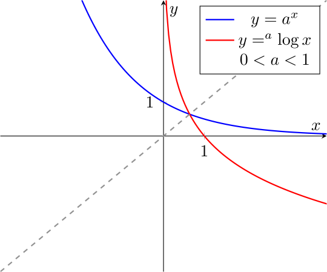

1.1
Fungsi Transenden
A) Rangkuman Materi
1 Bilangan Berpangkat
\( a^n = \underbrace{a \cdot a \cdot a \cdots a}_{n\ \text{faktor}} \)
- \( a^m \cdot a^n = a^{m+n} \)
- \( \frac{a^m}{a^n} = a^{m-n} \)
- \( (a^m)^n = a^{mn} \)
- \( a^0 = 1 \)
- \( a^{-n} = \frac{1}{a^n} \)
- \(a^r = a^{\frac{p}{q}} = \sqrt[q]{a^p} = \)
- \(a^{\frac{-p}{q}} = \frac{1}{a^{\frac{p}{q}}} \)
2 Fungsi Eksponensial

Gambar 2.1 Grafik Eksponensial
3 Fungsi Eksponensial Natural
- \(\lim_{x \to +\infty} (1 + \frac{1}{x})^x = e\)
- \(\lim_{x \to -\infty} (1 + \frac{1}{x})^x = e\)
4 Fungsi Logaritma
\( {}^{a}\log_{b}x \)
dengan \(a>0,\) \(a \ne 1\) dan \(x>0\) (Dibaca: logaritma berbasis a dari x).- \( {}^{a}\log_{1} = 0\)
- \( {}^{a}\log_{a} = 1 \)
- \( {}^{a}\log_{bc} = {}^{a}\log_{b} + {}^{a}\log_{b} \)
- \( {}^{a}\log_{ \frac{b}{c}} = {}^{a}\log_{b} - {}^{a}\log_{b} \)
- \( {}^{a}\log_{b^r} = r{}^{a}\log_{b} \)
- \( {}^{a}\log_{ \frac{1}{c}} = -{}^{a}\log_{c}\)
\({}^{a}\log_{x} = \frac{{}^{b}\log_{x}}{{}^{b}\log_{x}}\)
5 Fungsi Logaritma Natural
\({}^{a}\log_{x} = \frac{\ln(x)}{\ln(a)}\)
untuk sebarang bilangan positif \(b, c\) dan sebarang bilangan rasional \(r,\) berlaku
- \(\ln(bc) = \ln(b) + \ln(c)\)
- \(\ln (\frac{b}{c}) = \ln(b) - \ln(c)\)
- \(\ln(b)^r = r \ln(b)\)
- \(\ln (\frac{1}{c}) = -\ln(c) \)
\(a^x =e^{x \ln (a)} \)
dan disebut fungsi eksponensial berbasis auntuk sebarang bilangan positif \(a\) dan sebarang bilangan real \(x\) berlaku
\(\ln a^x = x \ln a\)
6 Grafik dari Fungsi Logaritma dan Eksponensial
Untuk \(a>0\) dan \(a\ne1,\) fungsi \(f(x)=a^x\) dan \(g(x)={}^a \log{x}\) saling invers
Fungsi \(lnx\) adalah naik dan oleh karena itu satu-satu pada \((0,+\infty)\)
- \(\lim_{x \to +\infty} \) \( \ln x = +\infty\)
- \(\lim_{x \to 0^+} \) \( \ln x = -\infty\)
- Domain dari \(\ln x\) adalah \((0,+\infty)\)
- Range dari \(\ln x\) adalah \((-\infty,+\infty)\)
Invers dari fungsi logaritma natural ln \(x\) dinyatakan dengan \(e^x\) dan disebut fungsi eksponensial natural

Gambar 6.1 Grafik Logaritmik

Gambar 6.2 Grafik Logaritmik
- Domain dari \(e^x = \) range dari \((-\infty,+\infty)\)
- Range dari \(e^x=\) domain dari \(\ln x = (0,+\infty)\)
- \(\ln e^x \) untuk \(-\infty < x<+\infty\)
- \(e^{ln x}\) untuk \(x > 0\)
7 Turunan dan Integral Fungsi Logaritma
Jika \(u(x) \gt 0,\) dan fungsi \(u\) dapat diturunkan di \(x,\) maka\(\frac{d}{dx} [{}^a \log x] = \frac{1}{x \ln a} \frac{du}{dx} \) dan \( \frac{d}{dx}[\ln u]=\frac{1}{x}\frac{du}{dx}\)
\(\ln x = \int_1^x \frac{1}{t} \,dt, x>0\)
8 Turunan Pangkat Real X
Untuk sebarang bilangan real \(r\) fungsi \(x^r\) dapat diturunkan pada \((0,+\infty)\) dan turunannya adalah
\(\frac{d}{dx}[x^r]= rx^{r-1}\)
9 Turunan dan Fungsi Eksponensial
- Fungsi \(e^x\) dapat diturunkan pada \(-\infty,+\infty\), dan turunannya adalah
- Fungsi \(a^x\) dapat diturunkan pada \( -\infty, +\infty \) dan turunannya adalah
\(\frac{d}{dx}[e^x]=e^x\)
\(\frac{d}{dx}[a^x]=a{}^x \ln a\)
\(\frac{d}{dx}[e^u]=e^u\frac{du}{dx} \) dan \( \frac{d}{dx}[a^u]=a{}^u \ln a\frac{du}{dx}\)
Rumus integral yang bekaitan dengan turunan di atas adalah\(\int a^u\,du = \frac{a^u}{lna} +C\) dan \( \int e^u\,du = e^u + C\)
- \(\lim_{x \to 0} (1+x)^{\frac{1}{x}} = e \)
- \(\lim_{x \to +\infty} (1+\frac{1}{x})^x = e \)
- \(\lim_{x \to -\infty} (1+\frac{1}{x})^x = e \)
10 Grafik yang Melibatkan Fungsi Eksponensial dan Logaritma
: Tabel Sifat Fungsi Eksponen dan Logaritma
| Sifat \( e^x \) | Sifat \( \ln x \) |
|---|---|
| \( e^x > 0 \) untuk semua \( x \) |
\( \ln x > 0 \) jika \( x > 1 \) \( \ln x < 0 \) jika \( 0 < x < 1 \) \( \ln x = 0 \) jika \( x = 1 \) |
| \( e^x \) naik pada \( (-\infty, +\infty) \) | \( \ln x \) naik pada \( (0, +\infty) \) |
| grafik \( e^x \) cekung ke atas pada \( (-\infty, +\infty) \) | grafik \( \ln x \) cekung ke bawah pada \( (0, +\infty) \) |
B) Contoh Soal
1. Soal Kuis
Dapatkan nilai \(x\) dari: \(\ln (x+6) + \ln (x-3) = \ln 5 +\ln2\)
Jawab:
\(\ln (x+6) +\ln (x-3) = \ln 5 + \ln2\)
\(\ln (x+6)(x-3) = \ln 10\)
sehingga \((x+6)(x-3)=10 -> x^2 +3x -28 = (x+7)(x-4)=0\). Jadi x yang memenuhi adalah \(7\) atau \(4\)2. Soal ETS 2020
Dapatkan turunan dari \(y=(1+x)^{\frac{1}{x}}\)
Jawab:
\(y=(1+x)^{\frac{1}{x}}\)
\(\ln y =\ln(1+x)^{\frac{1}{x}}\)
\(\ln y=\frac{1}{x} \ln (1+x)\)
\(\frac{d}{dx}[\ln y]=\frac{1}{y}[\frac{d}{dx} \ln(1+x)]\)
\(\frac{dy}{dx}\frac{1}{y}=-\frac{1}{x^2} \ln(1+x)+\frac{1}{1+x}\frac{1}{x}\)
\(\frac{dy}{dx}=(-\frac{1}{x^2} \ln (1+x)+\frac{1}{1+x}\frac{1}{x})\)
\(\frac{dy}{dx}=(\frac{-(1+x) \ln (1+x)+x}{x^2(1+x)})(1+x)^{\frac{1}{x}}\)
\(\frac{dy}{dx}=(-\frac{-(1+x) \ln (1+x)+x}{x^2})(1+x)^{\frac{1-x}{x}}\)
3. Hitung \(\int \frac{dx}{x \ln x}\)
Jawab::
Misalkan \(u=\ln x\), sehingga \(du = \frac{dx}{x}\)
\(\int \frac{dx}{x\ln x}=\int \frac{du}{u}\)
=\(\ln x\) + C
=\(\ln (\ln x)\) + C
C) Latihan Soal
Hint:
Misalkan \(e^x=u\)Pembahasan
\(e^{-2x}-3e{-x}=-2\)
\(u^2-3^u+2=0\)
\((u-1)(u-2)=0\)
Diperoleh,u 1\(=e{-x1}=1\)
\(\ln e{-x1}=\ln 1\)
\(-x\)1\(=0\)
\(x\)1\(=0\)
dan
u22\(=e^{-x2}=2\)
\(\ln e^{-x2}=\ln 2\)
\(-x\) \(2\)\(=\ln 2\)
\(x\) \(2\)\(=\ln {\frac{1}{2}}\)
Jadi \(x\) yang memenuhi adalah \(0\) dan \(\ln \frac{1}{2}\)2. Soal ETS 2021
Dapatkan penyelesaian dari persamaan \(\ln (e^{-x}-1)=x\)
Pembahasan
\( \ln(e^{-x}-1=x)\)
\(e^{\ln (e^{-x}-1)=e^x}\)
\(e^{-x}-1=e^x\)
\(e^{2x} +e^x-1=0\)
Misalkan \(u=e^x\), sehingga
\(e^{2x} + e^x-1=0\)
\(u^2 + u - 1\)
Dengan rumus abc diperolehu 12 \(= ]\frac {-1 ± √(1^2-4(1)(-1))}{2}\)
=\(\frac{-1 ± √(5)}{2}\)
Karena \(u=e^x > 0\), akibatnya hanya \(u=e^x=\frac{-1 ± √(5)}{2}\)3. Soal ETS 2020 Dapatkan \(\frac{dy}{dx}\) dari fungsi \(y=\ln (\frac{\cos^2 x}{√(2x-3x^2)})\)
Hint: \(\frac{dy}{dx}\) dari \(y=\ln(u(x))\) adalah \(\frac{dy}{dx}=\frac{1}{u(x)}\frac{du}{dx}\)
Pembahasan:
\(\frac{dy}{dx}=\frac{d}{dx}[ln(\frac {\cos^2x}{√(2x-3x^2)})]\)
\(=\frac{a}{\cos^2x}\frac{d}{dx}[\frac{\cos^2x}{√(2x-3x^2)}]\)
\(=\frac{√(2x-3x^2)}{\cos^2x}\frac{-2\cos x \sin x √(2x-3x^2)-\frac{2-6x}{2√(2x-3x^2)}\cos^2x}{√(2x-3x^2)}\)
\(=\frac{-2 \sin x(2x-3x^2)-(1-3x) \cos x}{(2x-3x^2) \cos x}\)
\(=\frac{-2 \tan(2x-3x^2)-1+3x}{(2x-3x^2)}\)
4. Soal ETS 2024 Hitung integral \(\int x2^{x^2};dx \)
Hint 1: Substitusi \(u=x^2\)
Hint 2: Gunakan sifat \(\int a^x; dx = \frac{a^x}{\ln a}+ C\)
Pembahasan:
\(\ \int x2^{x^2} dx = \int 2^u\frac{du}{2} \)
\(=\ \frac{1}{2} \int 2^u ;du\)
\(= \frac{1}{2}\frac{2^u}{\ln 2} +C\)
\(= \frac{2^{u-1}}{\ln 2} + C\)
\(= \frac{2^{x^2-1}}{\ln 2} + C\)
© Copyright 2025 | KP Mahasiswa Matematika 2022